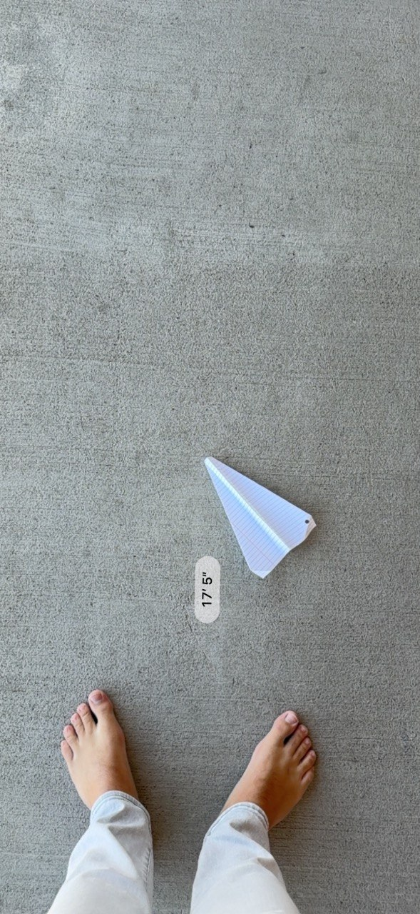
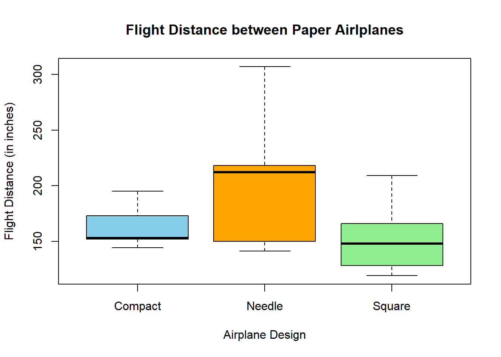
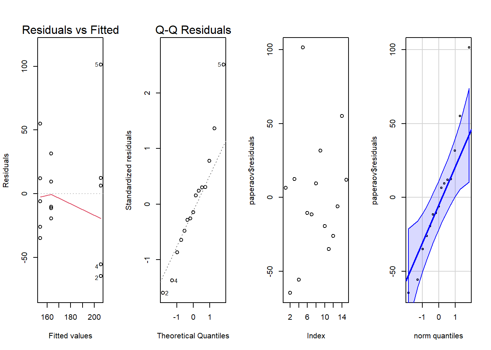

Introduction
The Boeing Engineering team has tasked us with finding out which paper airplane design is “best”. Such an experiment is important so that they may be able to find better ways in which we can design airplanes in the future. Now the “best” paper airplane design is a very subjective idea. It could be measured by flight time or flight distance. The experiment could also be affected by a myriad of factor including wind speed and angle of initial attack. In order to complete a proper experiment and reveal actual, verifiable and accurate results I took on this problem by designing 3 different paper airplanes. The design would be the experimental variable which we act upon. I measured the “best” paper airplane in terms of flight distance because I wanted to see if the designs themselves did anything to increase flight efficiency. This will be our response variable.
Method
In order to conduct the experiment in a way that would help to increase confidence in the results I set several constraints. (Controlled held constant) * Each paper airplane would be thrown at the exact same spot each time * Each airplane would be folded to exact instructions * I would measure the farthest part of the airplane after landing * The experiment would be conducted next to a walled area to help decrease the chance of wind resistance or assistance. * Each paper airplane would be thrown 5 times * Each plane would be thrown randomly one after the other but to mitigate damage skewing the results I made sure that the throwing was done in rounds so each plane received equal damage over time.
There were also things we did not control that may have affected the study. (Not controlled, not measured) * Angle of attack may have been different each time but intent was to throw at the same spot each time. * Initial velocity may have changed each observation because of human error * Wind and air resistance may have still had an effect on flight * Each airplane may have twisted and flowed with the least resistant flow of air, meaning that the initial orientation and final orientation of the plane may have had an effect. * The accuracy of the measuring tool may be sufficient for our study but not calibrated to perfect standards
With these advantages and limitations of the study in mind we will move to the step by step of how the experiment was conducted. I chose 3 sheets of notebook paper on which to fold the planes because they are thin enough to fold them precisely. I followed each step on www.foldnfly.com using the “Basic Dart” (renamed “Compact”), the “Tail Spin” (renamed “Square”) and the “Arrowhead” (renamed “Needle”) airplanes. These are our controlled and varied factors using our experimental units. Then, selecting a random airplane I stepped outside. With two feet planted on the ground facing parallel to a wall, I brought up my hand holding the side of the airplane perpendicular to the wings. I held the paper airplane with the wings parallel to the ground and the nose pointing straight in front of me and my hand holding the bottom of the plane. Then when my elbow was at a 90 degree angle I threw the airplane and let go before the nose of the plane pointed down to the ground about 25 feet in front of me. This let the airplane fly at a decent angle of attack to fly longer. Then after letting it fly and hit the ground I used my phone’s measuring app to mark the spot where my toes were lined up and measured from that point to the farthest corner of the airplanes paper. Then I repeated the process for each observation on each plane design.
Analysis
Basic Statistics
In order to describe the results, I compared the flight distances of the three paper airplane designs. There were 15 observations in total, with five throws for each airplane. The overall average flight distance was 174.33 inches, with a standard deviation of 47.89 inches. The shortest flight was 119 inches and the longest was 307 inches.
Show the code
pander(favstats(paper$Dist.in.))| min | Q1 | median | Q3 | max | mean | sd | n | missing |
|---|---|---|---|---|---|---|---|---|
| 119 | 146 | 153 | 202 | 307 | 174.3 | 47.89 | 15 | 0 |
Show the code
pander(favstats(paper$Dist.in. ~ Type, data = paper))| Type | min | Q1 | median | Q3 | max | mean | sd | n | missing |
|---|---|---|---|---|---|---|---|---|---|
| Compact | 144 | 152 | 153 | 173 | 195 | 163.4 | 20.65 | 5 | 0 |
| Needle | 141 | 150 | 212 | 218 | 307 | 205.6 | 66.6 | 5 | 0 |
| Square | 119 | 128 | 148 | 166 | 209 | 154 | 35.73 | 5 | 0 |
Show the code
pander(boxplot(paper$Dist.in. ~ Type, data = paper, main = "Flight Distance between Paper Airlplanes", xlab = "Airplane Design", ylab = "Flight Distance (in inches)", col = c("skyblue", "orange", "lightgreen")))
stats:
144 141 119 152 150 128 153 212 148 173 218 166 195 307 209 n: 5, 5 and 5
conf:
138.2 164 121.1 167.8 260 174.9 out:
group:
names: Compact, Needle and Square
Show the code
paperaov <- aov(paper$Dist.in. ~ Type, data = paper)The Needle airplane had the highest average distance and the highest median distance. Its average was 42.2 inches farther than the Compact and 51.6 inches farther than the Square. However, the Needle also had the greatest variation between throws. The Compact had the smallest standard deviation, meaning that its flight distances were the most consistent in this experiment. The boxplot shows that the flight distances overlap between designs. Although the Needle traveled farther on average, some of its throws were shorter than throws from the other airplanes
Checking the data
Before interpreting the ANOVA, I checked the normality, variances, and residuals.
Show the code
par(mfrow = c(1,4))
plot(paperaov, which = 1)
plot(paperaov, which = 2)
plot(paperaov$residuals)
qqPlot(paperaov$residuals, id = F)
The normality within the QQ plot and quantity bands tell us that most of the data falls within an acceptable range but some have higher residuals than others. The fitted values are also pretty close to acceptable. Overall the data looks like quality data but we may want to be a little cautious about the results should they be on the fence.
Anova
For the original one-way ANOVA, the null hypothesis was that all three designs have the same population mean flight distance. The alternative hypothesis was that at least one mean differs. I used a significance level of 0.05.
Show the code
pander(summary(paperaov))| Df | Sum Sq | Mean Sq | F value | Pr(>F) | |
|---|---|---|---|---|---|
| Type | 2 | 7553 | 3776 | 1.846 | 0.2 |
| Residuals | 12 | 24552 | 2046 | NA | NA |
Based on the p-value of 0.2 we can go ahead and conclude there there is insufficient evidence to reject the null hypothesis that there is a difference in flight efficiency based on the design of the plane.
Since the p-value is insignificant and we can make no accurate assumptions on our experimental unit we have no need to perform pair wise tests
Conclusion
Based on this experiment, there was insufficient evidence to conclude that the three paper airplane designs had different mean flight distances. The ANOVA produced a p-value of 0.2, which was greater than the significance level. Although the Needle airplane had the highest average distance at 205.6 inches, it also had the greatest variation between throws. The Compact produced the most consistent distances. These findings do not prove that the designs perform equally, but they also do not provide enough evidence to recommend one design as the best. In order to increase confidence in these results, a future study should test several airplane design’s and include more trials. Conducting the experiment indoors, using a consistent launching method, and using a more precise measuring tool would help reduce variation caused by wind, human error, and measuring tool uncertainty. Testing several airplanes would also help separate the effects of design from folding differences and damage to an individual plane.